Ibara, Okayama: things to do, food and stays
Ibara · Okayama
Ibara
Highlighted on the Okayama map.

Stay
ホテルルートイン岡山 井原
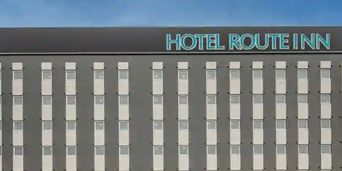
Hotel Route Inn Okayama Ihara
Hotel at Betsukomyosekijinko Onsen in Shimodebu, Ibara with parking and a large communal bath.
ビジネスホテル歴城荘
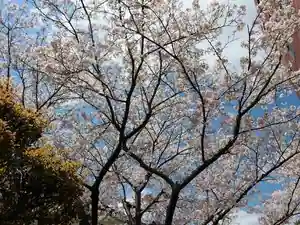
Business Hotel Reki Shiro So
Inn in Ihara, Ibara with business travelers and groups.
ファミリーロッジ旅籠屋・井原店
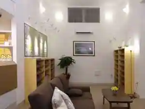
Famiri Lodge Hatago Ya Ihara
Mountain lodge in Sasaga, Ibara with breakfast available and family-friendly stays.
Dining
中華そば専門店 笠北
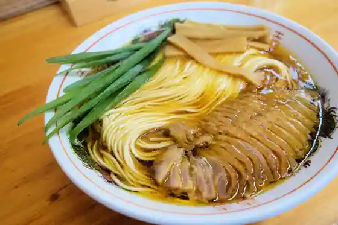
Chuka Soba Senmon Kasa Kita
一松
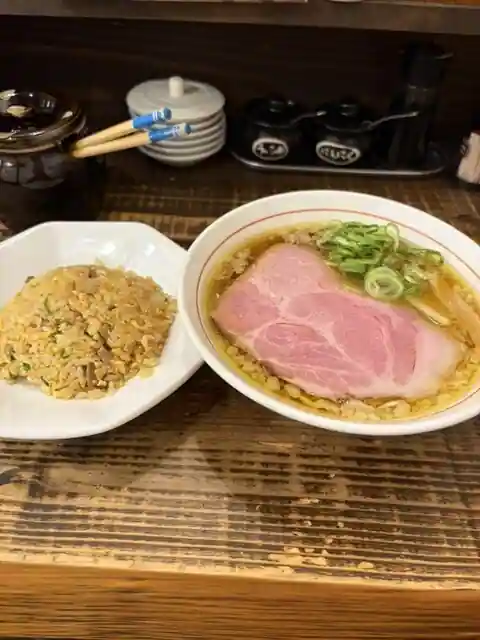
Ichimatsu
徳山牧場 アイス工房
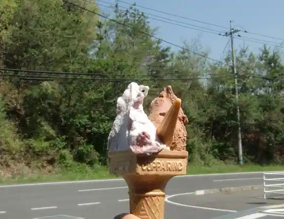
Tokuyama Bokujo Aisu Kobo
遊心美膳 高木
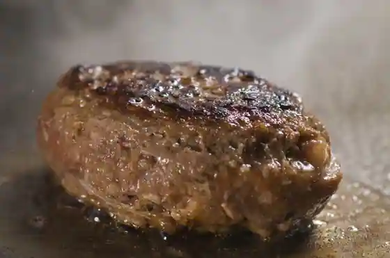
Yu Kokoro Bi Zen Takagi
夢味庵
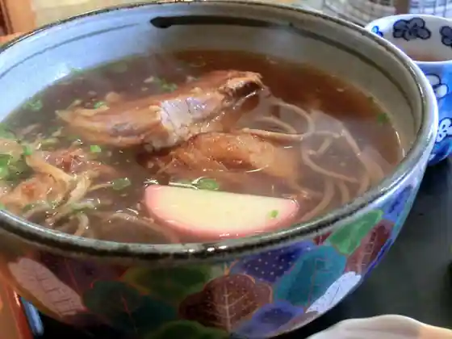
Yume Aji Iori
お食事処 星の郷
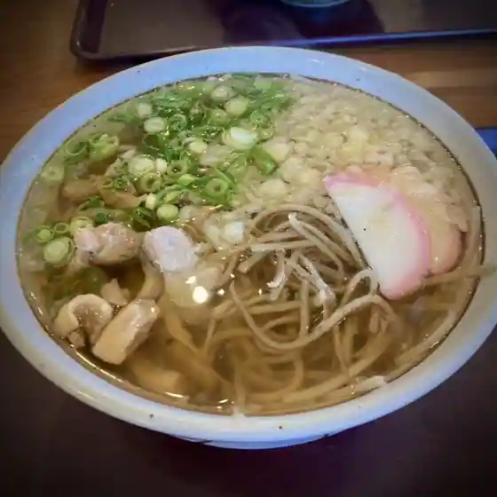
O Shokuji Tokoro Hoshi No Sato
味彩
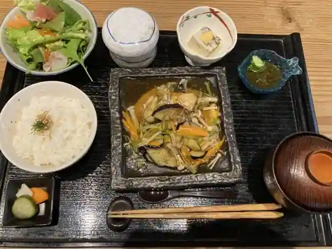
Aji Sai
レストラン土手
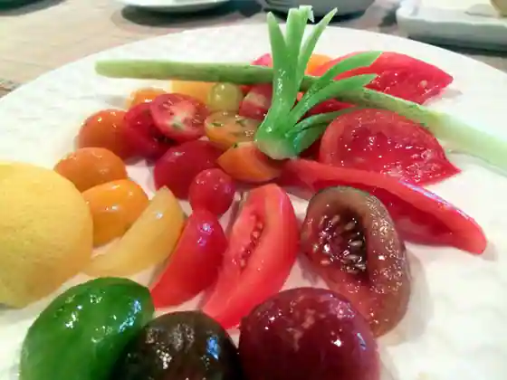
Restaurant Dote
日本一
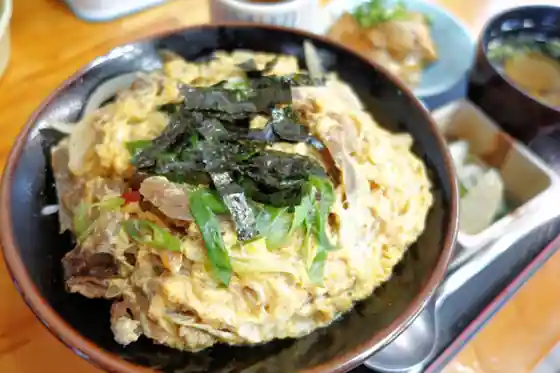
Nippon'Ichi
CoffeeRoastery.Slow
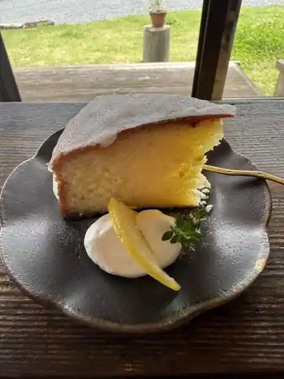
CoffeeRoastery. Slow
手打ちそば 青空
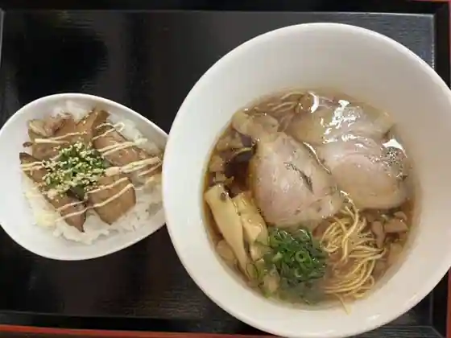
Teuchi Chisoba Aozora
モン シュー
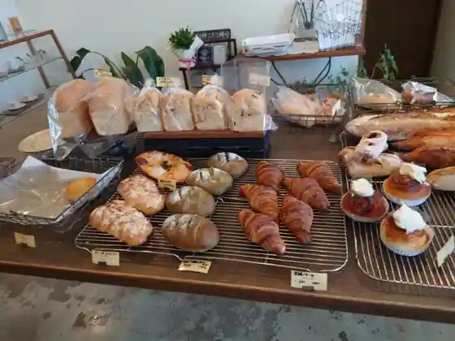
Mon Shu
Cafe ほしぞら
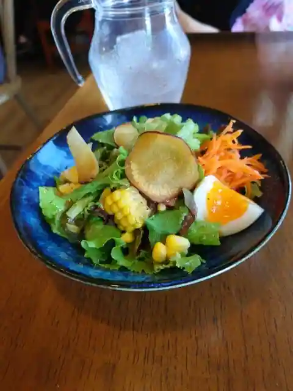
Cafe Hoshizora
馬かろう
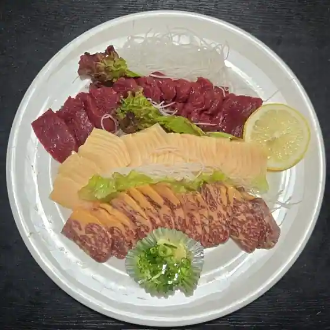
Uma Karo
美星産直プラザ
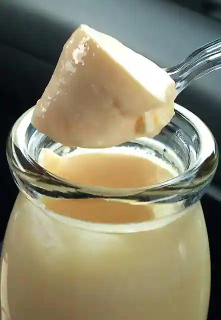
Bisei Sanchoku Plaza
Cafe ほしおと
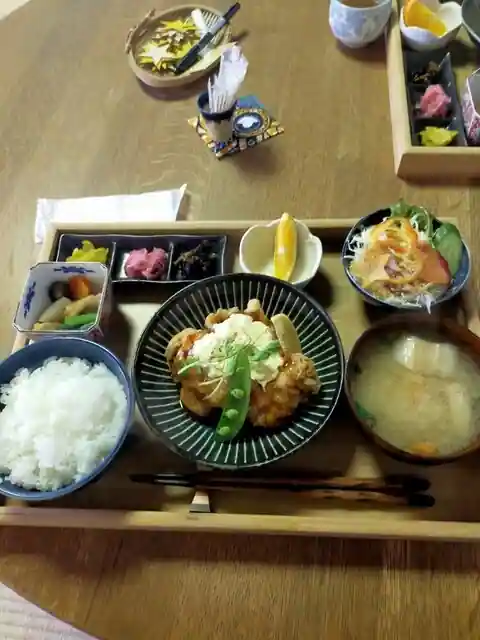
Cafe Hoshioto
芳泉庵
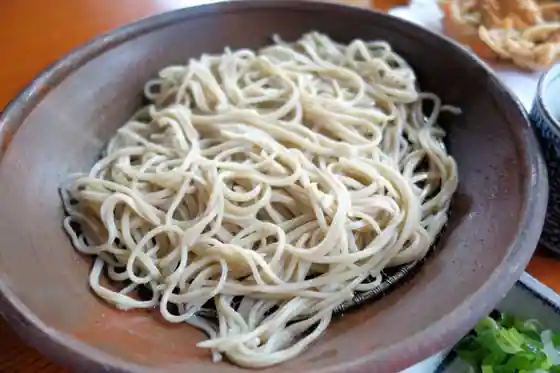
Hosen Iori
紅蘭中華料理
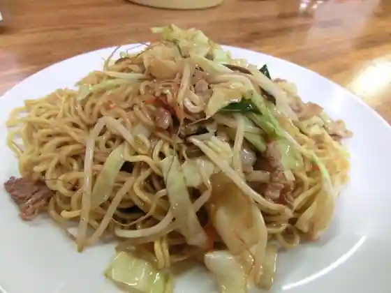
Koran Chukaryori
美星のぱん屋さん きらら
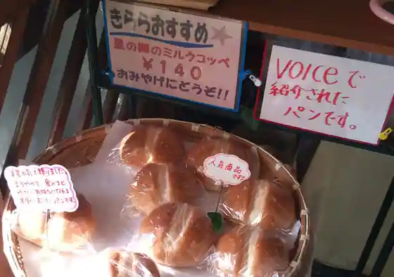
Bisei Nopan Ya San Kirara
一番星
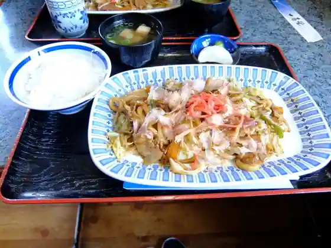
Ichiban Hoshi
喜楽 別亭
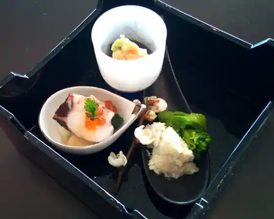
Kiraku Betsu Tei
焼肉食堂まいど
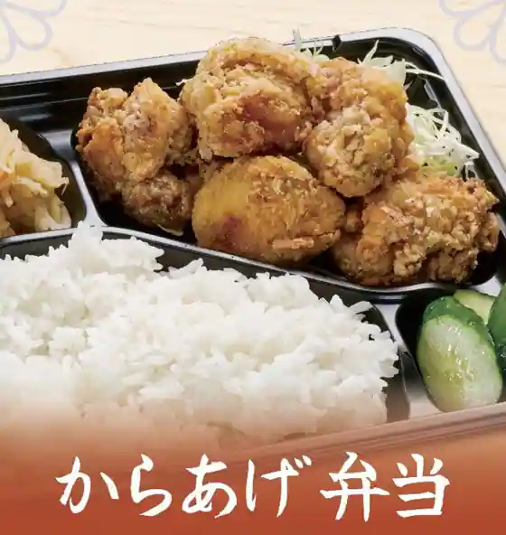
Yakiniku Shokudo Maido
そば小屋 博翠
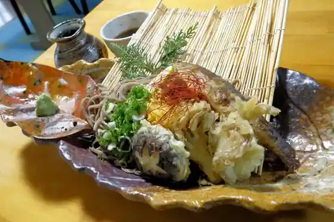
Soba Koya Hiroshi Sui
情熱麺屋313
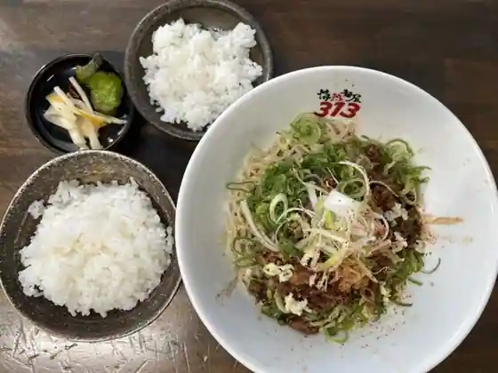
Jonetsu Men Ya 313
Sights
Budo Roman Kan

Bisei Tenmondai

Hoshi no Sato Aozora City

Hirakushi Tanaka Art Museum

Ibara Denimusutoa
Chusei Yumegahara
Tenjin Kyo
Keigamaru Green Park
Hoshizora Kan Oto Campground
Ibara Rifuresshu Park
Yamanari Shuzo
Ibara Tsutsumi
Hosen Tera
Hoshi no Sato Tourist Information (Hoshi no Sato Kanko Center)
Sudo Tourist Farm
Totsui Razu Kannon In
Onigagaku
Hoshi O Shrine
Ibara Denimusukuea Garden
Ibara Tetsudo Yume Yasuragi Go
Ibara Yoshii Folk History Museum
O no Hanako Shoten
Takakoshi Castle Park
Kojo Kan
Shiroito Falls
Sode Kami Inari Daimyojin
Ibara Tetsudo Sutatorein
Ozasa Maru Castle Ruins
Hana Rei Otsuka Art Museum
Aihara Park
Takiyama Nature Park
Ju Gen Tera
Keigamaru
Odagawa no Koi no Bori
Okei Juku Ato Park